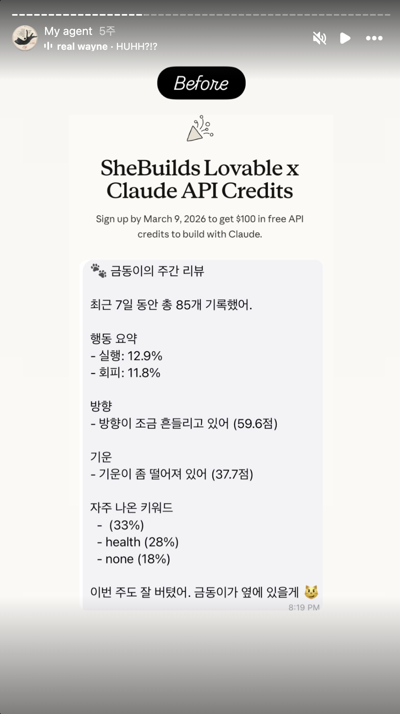

친밀감을 부여하는 작업:
아이덴티티와 톤앤매너
에이전트에 내가 키우는 고양이, 금동이 정체성을 부여했다. 말투, 성격, 상태에 따른 소리 네 가지까지 구체적으로 설계했다. 단순한 이미지를 가져온 것이 아니라 금동이의 아이덴티티를 개입 UX의 일부로 설계했다.
왜 친밀감이 필요했나
초기에는 고양이 이모지만 달렸을 뿐, 정체성 없이 데이터만 출력하는 형태였다. 분석은 정확했지만 사용자 입장에서 행동 변화로 이어지지 않았다. 무엇을 바꾸어도 정보를 받고 혼자 해석하는 단계에서 멈췄다.
아이덴티티를 부여한 뒤 체감이 바뀌었다.
| 단계 | 전달 방식 | 체감 |
|---|---|---|
| 1. 데이터만 출력 | 실행 52%, 회피 27% | 받아들이지만 감흥은 없음 |
| 2. 금동이 말투로 분석 나열 | 이번 주 실행이 많았네 | 읽는 재미는 생김 |
| 3. 금동이가 지켜본다는 편지 형식 | 이번 주엔 피곤함이 많았지. 그래도 화요일엔 피그마를 오랜만에 열었더라 | 다음 시도를 고민하게 됨 |



같은 데이터라도 누가, 어떤 자격으로 말하는가가 체감의 질을 결정한다는 걸 확인한 과정이었다.
참고로 Openclaw도 Soul이라는 이름의 에이전트 정체성 레이어를 채택하고 있고, 에이전트 아이덴티티 설계는 업계에서 다양한 형태로 시도되고 있다. 이 프로젝트의 금동이는 그 논의에 개인 회고 에이전트의 한 사례로 얹는 것.
왜 고양이였나
아이덴티티를 부여하기로 했다면 다음 질문은 어떤 아이덴티티인가였다. 몇 가지 기준으로 설계했다.
| 기준 | 선택 | 이유 |
|---|---|---|
| 거리감 | 가까운 존재 | 가까운 존재의 말을 더 신뢰하게 되고, 친밀감을 가지기 쉽다. |
| 권위 | 판단자 아닌 관찰자 | '너 지금 당장 이걸 해야해'가 아니라, '이런 패턴이 보이네'의 포지션 |
| 성격 | 담담하고 조용한 관찰자 | 자기조절 시스템에 감정 과잉은 방해가 된다 |
이 조합에서 고양이가 나왔다. 조르지 않고, 판단하지 않고, 일상적으로 곁에 있는 존재.
어떻게 구현했나: 상태 소리 네 가지
금동이의 정체성을 가장 구체적으로 드러낸 장치는 메시지마다 앞에 붙는 상태 소리다. 사용자 메시지의 성격에 따라 네 가지 중 하나가 선택된다.
| 소리 | 조건 | 어디서 왔나 |
|---|---|---|
| 니야옹 ~ | 단순 기록, 중립적 인풋 | 고양이의 일반적인 인사 |
| 그릉그릉그릉 | 실행 (바로 해냄) | 편안할 때의 만족스러운 소리 |
| 이야아아아오오오옹! | 실행 (오래 미루다가 결국 해냄) | 내가 키우는 고양이가 오래 참았다가 표현할 때의 소리 |
| 우르르르릉? | 회피 감지 | 내가 키우는 고양이가 의문스러울 때 내는 소리 |

이 소리들의 핵심은 범용 브랜딩이 아니라 나에게만 완벽히 작동하는 개인적 기호라는 점이다. 마지막 두 소리는 실제로 내가 키우는 고양이가 그 상황에서 내는 소리를 그대로 가져온 것. 다른 사용자가 봤을 때는 그저 재미있는 의성어지만, 나에게는 이미 감정적 맥락이 형성되어 있는 신호다.
우르르르릉?을 들으면 실제 고양이의 물음표 섞인 표정이 떠오른다. 그래서 이 소리는 단순한 감정 표현이 아니라 판단이 아니라 관찰이라는 신호가 된다. 물음표로 끝나는 이유, 추궁처럼 읽히지 않는 이유도 여기에 있다. 이야아아아오오오옹!도 마찬가지다. 오래 참다가 터뜨리는 이 표현은, 미뤘던 일을 마침내 해낸 순간에 가장 적확한 감정 묘사가 된다.
무엇이 UX 원칙으로 남는가
친밀감 설계는 브랜딩이 아니라 개입 UX의 일부라고 생각한다. 정리하면 이렇다.
| 원칙 | 이유 |
|---|---|
| 가까운 존재의 언어로 | 전문가 톤은 정보는 전달하지만 행동은 바꾸기 어렵다 |
| 판단자 아닌 관찰자로 | 판단받는다고 느끼는 순간 사용자는 방어 모드로 들어간다 |
| 지켜봐 온 관계의 서사로 | 축적된 맥락이 실리면 같은 말도 다르게 들린다 |
| 일관된 성격 유지 | 성격이 흔들리면 관계가 깨지고, 관계가 깨지면 지속이 끊긴다 |
| 개인 기호의 활용 | 범용 브랜딩보다 사용자의 맥락에서 온 기호가 더 강하게 작동한다 |
이게 전부 정답이라고 말하긴 이르다. 어떤 제품에는 건조한 톤이 더 맞고, 어떤 사용자에게는 정체성 부여가 오히려 방해가 될 수 있다. 다만 개인 회고처럼 감정이 작동하는 영역에서는 친밀감 설계가 유효한 장치라는 감각은 이 프로젝트를 통해 확인했다.
예시: 같은 상황, 다른 전달
저녁 회고에서 회피가 감지된 날, 두 가지 전달 방식의 차이.
정체성 없는 버전
오늘 회피 메시지가 4건 감지되었습니다. 회피 영역: 건강, 커리어.
금동이 버전
🐾 우르르르릉? 오늘 좀 흔들렸네. 아쉬운 건 뭐야?
같은 데이터, 다른 관계. 후자는 사용자에게 답하고 싶은 질문이 된다.